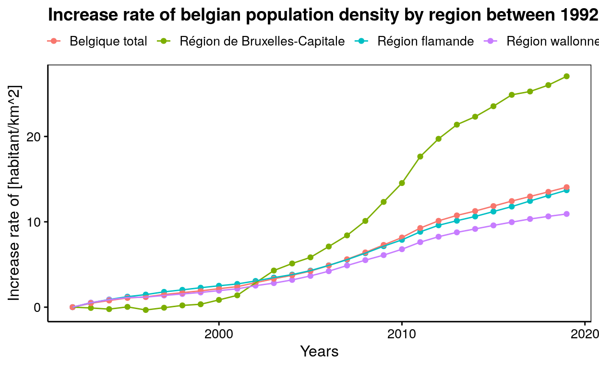

This post will explore the increase rate of the belgian population density by region between 1992 and 2019.
This post will explore the the increase rate of belgian population density by region between 1992 and 2019.
| Années | Région | Population | Densité (habitant/km^2) | Taux de croissance de densité (%) |
|---|---|---|---|---|
| 1992 | Région de Bruxelles-Capitale | 951217 | 5893.53779429988 | 0 |
| 1992 | Région flamande | 5794857 | 425.310605504587 | 0 |
| 1992 | Région wallonne | 3275923 | 193.83012839477 | 0 |
| 1993 | Région de Bruxelles-Capitale | 950339 | 5888.09789343247 | -0.0923044553867387 |
| 1993 | Région flamande | 5824628 | 427.495633027523 | 0.514918530013401 |
| 1993 | Région wallonne | 3293352 | 194.861369149754 | 0.531393489139969 |
| 1994 | Région de Bruxelles-Capitale | 949038 | 5880.03717472119 | -0.229064365389901 |
| 1994 | Région flamande | 5846952 | 429.134091743119 | 0.898168394817896 |
| 1994 | Région wallonne | 3304351 | 195.512159043844 | 0.866738894907898 |
| 1995 | Région de Bruxelles-Capitale | 951546 | 5895.57620817844 | 0.0346141707700289 |
| 1995 | Région flamande | 5866057 | 430.536293577982 | 1.22969128400461 |
| 1995 | Région wallonne | 3312795 | 196.011774451216 | 1.12469689934478 |
| 1996 | Région de Bruxelles-Capitale | 948087 | 5874.14498141264 | -0.329173976930667 |
| 1996 | Région flamande | 5880268 | 431.579302752294 | 1.47421880510686 |
| 1996 | Région wallonne | 3314421 | 196.107981776226 | 1.17628850023216 |
| 1997 | Région de Bruxelles-Capitale | 950597 | 5889.69640644362 | -0.0651560861553522 |
| 1997 | Région flamande | 5898824 | 432.941211009174 | 1.79398556347135 |
| 1997 | Région wallonne | 3320805 | 196.48571090468 | 1.37233658360419 |
| 1998 | Région de Bruxelles-Capitale | 953175 | 5905.66914498141 | 0.205818574235521 |
| 1998 | Région flamande | 5912382 | 433.936293577982 | 2.02910817991582 |
| 1998 | Région wallonne | 3326707 | 196.834921010591 | 1.54774802662127 |
| 1999 | Région de Bruxelles-Capitale | 954460 | 5913.63073110285 | 0.340881711161715 |
| 1999 | Région flamande | 5926838 | 434.99728440367 | 2.27833815334697 |
| 1999 | Région wallonne | 3332454 | 197.174960061535 | 1.72315946963833 |
| 2000 | Région de Bruxelles-Capitale | 959318 | 5943.72986369269 | 0.851610407327338 |
| 2000 | Région flamande | 5940251 | 435.981724770642 | 2.50875831746256 |
| 2000 | Région wallonne | 3339516 | 197.592805159458 | 1.93984419336532 |
| 2001 | Région de Bruxelles-Capitale | 964405 | 5975.2478314746 | 1.38643328118584 |
| 2001 | Région flamande | 5952552 | 436.884550458716 | 2.72036867226258 |
| 2001 | Région wallonne | 3346457 | 198.003490917697 | 2.15136975700355 |
| 2002 | Région de Bruxelles-Capitale | 978384 | 6061.85873605948 | 2.85600844314283 |
| 2002 | Région flamande | 5972781 | 438.369247706422 | 3.07070137076485 |
| 2002 | Région wallonne | 3358560 | 198.719602390391 | 2.52282928339266 |
| 2003 | Région de Bruxelles-Capitale | 992041 | 6146.47459727385 | 4.29164814356058 |
| 2003 | Région flamande | 5995553 | 440.040587155963 | 3.46335614022713 |
| 2003 | Région wallonne | 3368250 | 199.29294124608 | 2.81690140845069 |
| 2004 | Région de Bruxelles-Capitale | 999899 | 6195.16109045849 | 5.11780695473349 |
| 2004 | Région flamande | 6016024 | 441.54304587156 | 3.81604006489385 |
| 2004 | Région wallonne | 3380498 | 200.017632092776 | 3.19352009492854 |
| 2005 | Région de Bruxelles-Capitale | 1006749 | 6237.60223048327 | 5.83791744859627 |
| 2005 | Région flamande | 6043161 | 443.534752293578 | 4.28393407161834 |
| 2005 | Région wallonne | 3395942 | 200.931424176084 | 3.66300366300366 |
| 2006 | Région de Bruxelles-Capitale | 1018804 | 6312.29244114002 | 7.10523725977935 |
| 2006 | Région flamande | 6078600 | 446.135779816514 | 4.89760410053843 |
| 2006 | Région wallonne | 3413978 | 201.998579965682 | 4.21503379249857 |
| 2007 | Région de Bruxelles-Capitale | 1031215 | 6389.18835192069 | 8.4100557559633 |
| 2007 | Région flamande | 6117440 | 448.986422018349 | 5.56770355740519 |
| 2007 | Région wallonne | 3435879 | 203.294420448494 | 4.88056544394571 |
| 2008 | Région de Bruxelles-Capitale | 1047346 | 6489.13258983891 | 10.1058107690794 |
| 2008 | Région flamande | 6161438 | 452.215633027523 | 6.32714960852085 |
| 2008 | Région wallonne | 3456356 | 204.506005561801 | 5.5099829747717 |
| 2009 | Région de Bruxelles-Capitale | 1068532 | 6620.39653035935 | 12.3331647872077 |
| 2009 | Région flamande | 6208877 | 455.697394495413 | 7.14537631374762 |
| 2009 | Région wallonne | 3475671 | 205.648837346903 | 6.09812722488778 |
| 2010 | Région de Bruxelles-Capitale | 1089538 | 6750.54522924411 | 14.541514946874 |
| 2010 | Région flamande | 6251983 | 458.861137614679 | 7.88836378171217 |
| 2010 | Région wallonne | 3498384 | 206.992722324123 | 6.78945467677862 |
| 2011 | Région de Bruxelles-Capitale | 1119088 | 6933.63073110285 | 17.6479670961765 |
| 2011 | Région flamande | 6306638 | 462.872513761468 | 8.83120547365451 |
| 2011 | Région wallonne | 3525540 | 208.59949115437 | 7.62007945106536 |
| 2012 | Région de Bruxelles-Capitale | 1138854 | 7056.09665427509 | 19.7260050835321 |
| 2012 | Région flamande | 6350765 | 466.11119266055 | 9.59300275093461 |
| 2012 | Région wallonne | 3546329 | 209.829536713804 | 8.25465614198009 |
| 2013 | Région de Bruxelles-Capitale | 1154635 | 7153.87236679058 | 21.3849401208781 |
| 2013 | Région flamande | 6381859 | 468.393321100917 | 10.129082316428 |
| 2013 | Région wallonne | 3563060 | 210.819478137388 | 8.76541299076509 |
| 2014 | Région de Bruxelles-Capitale | 1163486 | 7208.71127633209 | 22.3154504762842 |
| 2014 | Région flamande | 6410705 | 470.510458715596 | 10.6275422632903 |
| 2014 | Région wallonne | 3576325 | 211.604342938288 | 9.16782747768662 |
| 2015 | Région de Bruxelles-Capitale | 1175173 | 7281.12143742255 | 23.5440838613126 |
| 2015 | Région flamande | 6444127 | 472.963449541284 | 11.2035926735793 |
| 2015 | Région wallonne | 3589744 | 212.398319626058 | 9.58056028478563 |
| 2016 | Région de Bruxelles-Capitale | 1187890 | 7359.91325898389 | 24.8809713686511 |
| 2016 | Région flamande | 6477804 | 475.435155963303 | 11.7866967623616 |
| 2016 | Région wallonne | 3602216 | 213.136264126383 | 9.9623381313522 |
| 2017 | Région de Bruxelles-Capitale | 1191604 | 7382.92441140025 | 25.2713988536601 |
| 2017 | Région flamande | 6516011 | 478.239339449541 | 12.4450400884061 |
| 2017 | Région wallonne | 3614473 | 213.861487485948 | 10.3337976577413 |
| 2018 | Région de Bruxelles-Capitale | 1198726 | 7427.05080545229 | 26.0201848125235 |
| 2018 | Région flamande | 6552967 | 480.951706422018 | 13.0822223789706 |
| 2018 | Région wallonne | 3624377 | 214.447488314301 | 10.6381881029768 |
| 2019 | Région de Bruxelles-Capitale | 1208542 | 7487.86864931846 | 27.052162197932 |
| 2019 | Région flamande | 6589069 | 483.601394495413 | 13.7052973125485 |
| 2019 | Région wallonne | 3633795 | 215.004733447725 | 10.9219419078574 |
| 1992 | Belgique total | 10021997 | 326.566424451758 | 0 |
| 1993 | Belgique total | 10068319 | 328.075825214246 | 0.462381725204394 |
| 1994 | Belgique total | 10100341 | 329.119260972987 | 0.780843310775641 |
| 1995 | Belgique total | 10130398 | 330.098667274919 | 1.08093211256393 |
| 1996 | Belgique total | 10142776 | 330.502003975366 | 1.20341733778363 |
| 1997 | Belgique total | 10170226 | 331.396461272769 | 1.47900909452797 |
| 1998 | Belgique total | 10192264 | 332.114568737984 | 1.69642036929296 |
| 1999 | Belgique total | 10213752 | 332.814754472286 | 1.91076951342745 |
| 2000 | Belgique total | 10239085 | 333.640229398156 | 2.16492635575833 |
| 2001 | Belgique total | 10263414 | 334.432989018867 | 2.40683467556726 |
| 2002 | Belgique total | 10309725 | 335.942031346737 | 2.86921640077166 |
| 2003 | Belgique total | 10355844 | 337.444817361269 | 3.32853599534556 |
| 2004 | Belgique total | 10396421 | 338.767017498126 | 3.73579936920109 |
| 2005 | Belgique total | 10445852 | 340.377724917723 | 4.22880240071042 |
| 2006 | Belgique total | 10511382 | 342.513017693636 | 4.88103622500536 |
| 2007 | Belgique total | 10584534 | 344.896673075043 | 5.61288544569311 |
| 2008 | Belgique total | 10665140 | 347.523216787774 | 6.4151636708822 |
| 2009 | Belgique total | 10753080 | 350.388738635993 | 7.2939951618336 |
| 2010 | Belgique total | 10839905 | 353.217928247906 | 8.16057813026305 |
| 2011 | Belgique total | 10951266 | 356.846622568347 | 9.2721315491319 |
| 2012 | Belgique total | 11035948 | 359.605982599629 | 10.1172796031479 |
| 2013 | Belgique total | 11099554 | 361.67858190231 | 10.7511406436599 |
| 2014 | Belgique total | 11150516 | 363.339176903777 | 11.2594543283216 |
| 2015 | Belgique total | 11209044 | 365.24630975268 | 11.8443212787458 |
| 2016 | Belgique total | 11267910 | 367.164456319854 | 12.4291882291699 |
| 2017 | Belgique total | 11322088 | 368.929844569716 | 12.9711853507671 |
| 2018 | Belgique total | 11376070 | 370.688846166379 | 13.5101203417338 |
| 2019 | Belgique total | 11431406 | 372.491967806054 | 14.0613038552225 |

Multiple important analysis can be made about this graph:
For attribution, please cite this work as
Gégo (2020, Nov. 16). AstroBio Blog: Increase rate of belgian population density by region between 1992 and 2019. Retrieved from http://Guillaume-Gego.github.io/Guillaume-Gego_blog/posts/2020-11-14-sdd1/
BibTeX citation
@misc{gégo2020increase,
author = {Gégo, Guillaume},
title = {AstroBio Blog: Increase rate of belgian population density by region between 1992 and 2019},
url = {http://Guillaume-Gego.github.io/Guillaume-Gego_blog/posts/2020-11-14-sdd1/},
year = {2020}
}